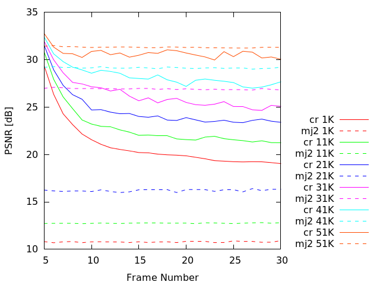

Experiment: 2014-06-10
Secuencia
Descripción
- Se ha simulado una transimisión de 25 imágenes de la secuencia stockholm de 1280x768.
- Este experimento compara cómo sería la transmisión siguiendo el algoritmo cr frente a una transmisión Motion JPEG2000.
- cr: Para nuestro algoritmo sólo se transmite la primera capa de calidad completa de cada precinto.
- En este experimento no se ha utilizado mc.
- mj2: Se trunca el code-stream a un determinado bitrate para simular una transmisión Motion JPEG2000.
- Parámetros de kdu_compress:
CLAYERS=8
CLEVELS=2
CPRECINCTS="{128,128},{64,64},{32,32}"
CBLK="{16,16}"
Layer 1: 52.935
Layer 2: 75.629
Layer 3: 107.036
Layer 4: 151.085
Layer 5: 212.880
Layer 6: 299.633
Layer 7: 421.937
Layer 8: 620.854
- En este experimento se está utilizando método 2 de knapsack con 3 capas de calidad para hacer la transmisión.
PSNR and SSIM
PSNR

SSIM